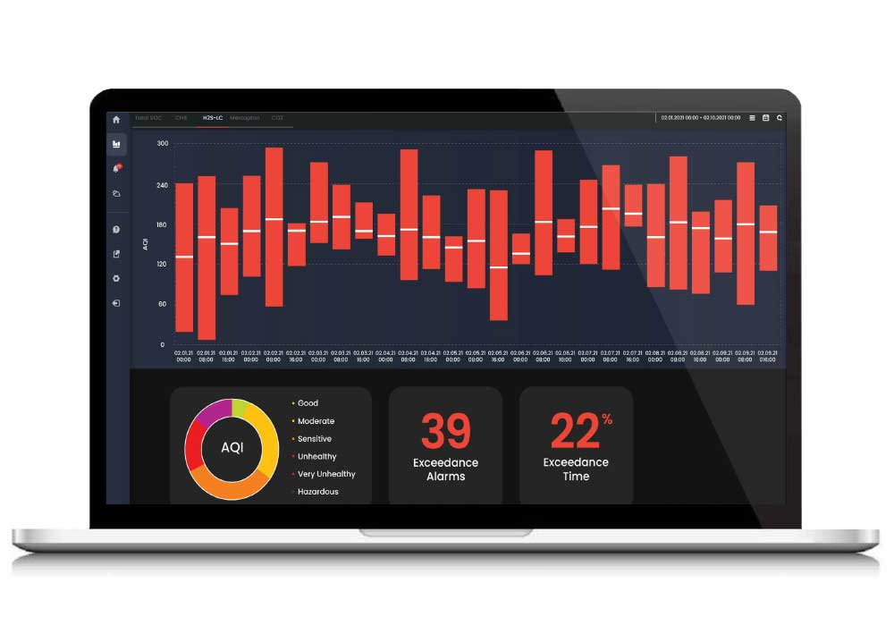

Gestión de sensores
- Sensor APIs Web - Acceso unificado a sensores desde JavaScript.
- Android Sensor Framework - Gestión nativa de sensores [web:24].
- Core Motion iOS - Framework para movimiento y orientación.
Identificar los tipos de sensores en dispositivos móviles
- GPS: Ubicación geográfica precisa vía satélites [web:22].
- Acelerómetro: Movimiento lineal y orientación básica del dispositivo [web:21].
- Giroscopio: Rotación y giros en 3D, complementa al acelerómetro [web:21][web:23].
- Magnetómetro: Orientación magnética (brújula digital) [web:22].
- Luz ambiente: Ajuste automático de brillo de pantalla.
- Proximidad: Detección de objetos cercanos (llamadas).
- Barómetro: Altitud por presión atmosférica [web:27].
- Podómetro: Conteo de pasos basado en acelerómetro.
Proceso de gestión de sensores: habilitación, obtención y procesamiento
- Habilitación: Solicitar permisos del usuario (location, sensors) y verificar disponibilidad del hardware.
- Obtención: Leer valores puntuales o suscribirse a eventos en tiempo real (watchPosition, addEventListener) [web:24].
- Procesamiento: Normalizar datos (grados/radianes), filtrar ruido, combinar sensores (fusión sensor) y aplicar lógica de negocio [web:23].
Proceso de gestión
- Habilitación: solicitar permisos del usuario.
- Obtención: leer muestras o suscribirse a eventos.
- Procesamiento: normalizar y aplicar lógica de negocio.
Demo: GPS y orientación
de>// Geolocalización
navigator.geolocation.getCurrentPosition(
(pos) => console.log(pos.coords.latitude, pos.coords.longitude),
(err) => console.error(err),
{ enableHighAccuracy: true, timeout: 10000 }
);
// DeviceOrientation
window.addEventListener('deviceorientation', (e) => {
console.log(e.alpha, e.beta, e.gamma);
});
